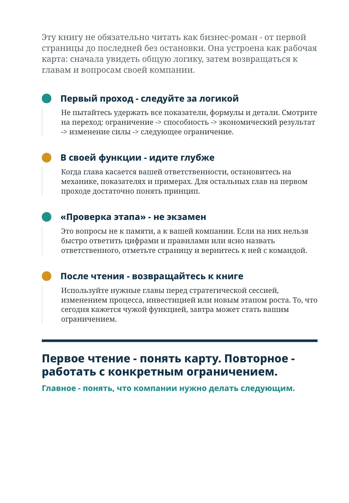

Как читать эту книгу
Эту книгу не обязательно читать как бизнес-роман - от первой страницы до последней без остановки. Она устроена как рабочая карта: сначала увидеть общую логику, затем возвращаться к главам и вопросам своей компании.
Первый проход - следуйте за логикой
Не пытайтесь удержать все показатели, формулы и детали. Смотрите на переход: ограничение -> способность -> экономический результат -> изменение силы -> следующее ограничение.
В своей функции - идите глубже
Когда глава касается вашей ответственности, остановитесь на механике, показателях и примерах. Для остальных глав на первом проходе достаточно понять принцип.
«Проверка этапа» - не экзамен
Это вопросы не к памяти, а к вашей компании. Если на них нельзя быстро ответить цифрами и правилами или ясно назвать ответственного, отметьте страницу и вернитесь к ней с командой.
После чтения - возвращайтесь к книге
Используйте нужные главы перед стратегической сессией, изменением процесса, инвестицией или новым этапом роста. То, что сегодня кажется чужой функцией, завтра может стать вашим ограничением.